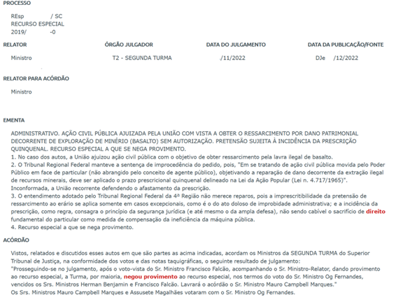

12 PLN no Direito
Perspectivas e Desafios com Textos Jurídicos e Legais
12.1 Introdução
Neste capítulo, tratamos de diferentes aspectos associados ao trabalho computacional com textos produzidos na esfera do Direito. As tarefas de PLN envolvidas, em geral, são a análise textual e a representação de conteúdos por meio de diferentes técnicas, mas há várias abordagens e estudos, voltados para diferentes finalidades. O nosso objetivo é apresentar apenas algumas perspectivas e desafios no âmbito de trabalhos que exploram materiais produzidos em português, considerando somente o cenário do Direito Brasileiro. Afinal, o Direito, de país para país, tem especificidades linguísticas e culturais que repercutem muito sobre seus textos, discursos e tipo de vocabulário.
Enquanto este capítulo introduz o gênero jurídico e discute alguns desafios para o PLN, o Capítulo 31 trata da tarefa de Reconhecimento de Entidades Nomeadas nos textos legais. Por sua vez, o Capítulo 32 propõe métodos de geração automática de ementas (resumos de processos judiciais).
Iniciamos este capítulo apresentando alguns aspectos sócio-históricos do Direito Brasileiro, que acabam influenciando suas práticas de escrita e os seus conteúdos textuais. Em seguida, situamos exemplos de reconhecimento e exploração do vocabulário jurídico, dos seus modos de dizer e, especialmente, das suas terminologias. Vamos partir de dois diferentes cenários textuais: as leis e sentenças judiciais. A primeira parte de exemplos tem a ver com um trabalho que denominamos reconhecimento terminológico (RT). O RT envolve a identificação dos usos e dos significados de um vocabulário especializado ao longo de acervos textuais, os quais formam um corpus de estudo. Esse trabalho, atualmente, é baseado em fontes escritas disponíveis em formato digital e se beneficia muito das técnicas da Linguística de Corpus (Sardinha, 2000) e do PLN. Depois dessa parte, mais dedicada ao vocabulário e terminologias, segue um exemplo de estudo em PLN, na área conhecida como Análise de Sentimentos (Capítulo PLN em Redes Sociais).
O território de materiais para estudo e de enfoques, em Direito, é extremamente amplo, isso se ficarmos restritos aos trabalhos que lidam com os textos jurídicos da atualidade. Ainda assim, vale mencionar que uma série de estudos históricos sobre a linguagem jurídica brasileira, tratando de seus conceitos e até preconceitos, têm sido muito úteis para uma crítica social e política sobre o Direito. Para esses estudos históricos, os processos sobre crimes no período colonial e do império, reunidos em corpora que se exploram com apoio computacional, têm mostrado a importância de se fazer uma linha de tempo de ações e de entendimentos até os dias de hoje. No Brasil, temos já, por exemplo, diferentes pesquisas filológicas e linguísticas dedicadas a estudos de processos criminais dos séculos 17, 18 e 19.
Entretanto, para se trabalhar com textos antigos em português, há todo o processo de normalizar e padronizar a apresentação escrita das “palavras antigas”, para então podermos fazer o seu processamento. A normalização de textos é, assim, um desafio multidisciplinar de uma nova área de estudos denominada Humanidades Digitais e que inclui o PLN no tratamento de acervos antigos.
Conforme nos coloca o artigo de Cameron et al. (2023), os desafios são muitos. Afinal, geralmente trabalha-se com textos em forma de arquivo provenientes de manuscritos que foram “decifrados” e transcritos. Isso significa enfrentar muitas questões associadas à variabilidade da escrita. Afinal, uma mesma palavra podia apresentar-se de vários modos, em um mesmo documento, escrito por uma mesma pessoa, como nos casos de ÁGUA/AGUA/AGOA ou UMA/HUA/HUMA. Há exemplos interessantes desses tipo de estudo histórico, no âmbito do Direito Penal e da Medicina Legal, com processos judiciais que envolveram crimes contra mulheres no Brasil do século 19. O artigo de Teixeira et al. (2022) mostra um exemplo de estudo bem interessante nesse tema do histórico dos tratamentos jurídicos para as práticas de violência contra as mulheres.
Mas, voltando à atualidade dos textos e da linguagem do Direito, veremos, mais adiante, como exemplos, alguns textos jurídicos brasileiros, buscando ilustrar suas peculiaridades. Vamos destacar: a) o texto do Estatuto da Criança e do Adolescente (ECA), conforme apresentado na Lei 8.069-90, promulgada em 13 de julho de 1990 e atualizada em 2021; b) o texto da nossa Constituição do Brasil, de 1988 (CF88); e, c) um conjunto de Sentenças Judiciais dos chamados “tribunais de pequenas causas”, os Juizados Especiais Cíveis. Conforme pretendemos deixar claro, esses três tipos de fontes, em suas características linguísticas e textuais, podem estar associados a diferentes tarefas de PLN, desde a descrição do português até a pontos específicos de Recuperação da Informação, área conhecida como Information Retrieval (Capítulo Recuperação de Informação).
Por isso, um outro exemplo que trazemos neste capítulo é o da análise de conteúdos em sentenças judiciais via Análise de Sentimentos. Este tipo de técnica pode ser muito útil para identificar, por exemplo, padrões de sentenças judiciais favoráveis ou desfavoráveis a um determinado assunto. A utilidade dessa técnica para os profissionais do Direito é grande, pois um profissional geralmente faz buscas para entender como um determinado tribunal já vem decidindo sobre um assunto específico. Nesse trabalho de pesquisa, são buscadas retornadas inúmeras sentenças e documentos. Vale destacar que existem tribunais no Brasil inteiro, que lidam diversos assuntos (trabalhistas, penais, civis, eleitorais, entre outros). Nesses órgãos são protocolados milhares de novos processos diariamente e neles existe uma base de milhões de processos já julgados, muitos já em formato digital. A criação de um método que possa filtrar, por exemplo, as causas que foram consideradas favoráveis, em um dado tema, tende a reduzir o trabalho de leitura individual de cada sentença, ajudando o profissional a buscar e encontrar a informação que precisa.
12.2 O Direito – uma moldura para a significação
Conforme já mostraram os estudos (Motta, 2021, 2022), o Direito se manifesta através da língua, pois são as palavras que emprega e os enunciados que produz que conferem e confirmam a sua existência peculiar (Maciel, 2001) como uma prática social e área de conhecimento. Assim, temos uma relação intensa entre o Direito e a língua em uso pelas pessoas que nele atuam. Isto é, pelo emprego de certas palavras1, com um sentido particular e pela forma como suas proposições e teses são enunciadas vemos todo um cenário de valores. Isso é tão importante que temos, há bastante tempo, uma área de estudos específica conhecida como jurilinguística (veja mais em Cornu (1990)).
Estudiosos dessa área da linguística (Montoro, 1998, p. 1998) explicam que a linguagem jurídica, sempre com destaque para escrita, compreende diversas “espécies” de práticas que se subdividem, conforme uma dada finalidade e foco. Vejamos um detalhamento dessas espécies ou modos de se apresentar conforme seus propósitos (Petri, 2017, p. 47):
- linguagem legislativa – a linguagem dos códigos - como o Código Penal ou Civil, das normas; sua finalidade: criar o Direito;
- linguagem judiciária, forense ou processual - é a linguagem dos processos e sentenças; sua finalidade: aplicar o Direito;
- linguagem convencional ou contratual – é a linguagem dos contratos, por meio dos quais se criam direitos e obrigações entre as partes;
- linguagem doutrinária – é a linguagem dos mestres, dos doutrinadores, cuja finalidade é explicar os institutos jurídicos, é ensinar o Direito;
- linguagem cartorária ou notarial – a linguagem jurídica que tem por finalidade registrar os atos de Direito.
Assim, embora se possa pensar em uma linguagem jurídica em geral, quando lidamos com sentenças produzidas em processos judiciais, temos linguagem judiciária, forense ou processual. Quando trabalhamos com os textos de leis, decretos e portarias, temos a linguagem legislativa. Cada tipo de suporte e/ou instrumento jurídico tende a adotar usos diferenciados e um vocabulário diferenciado. E esses elementos podem ser importantes quando se trabalha com o processamento em larga ou pequena escala desses textos. Como há uma especificidade de discursos envolvida, considerar os seus elementos linguísticos e modos de dizer próprios poderá nos ajudar a desempenhar tarefas de um modo mais produtivo. Afinal, o “Direito é, por excelência, entre as que mais o sejam, a ciência da palavra. Mais precisamente: do uso dinâmico da palavra” (Xavier, 2002, p. 1).
Conforme já mencionamos no início deste capítulo, em cada país, a linguagem jurídica tende a realizar um uso particular da língua nacional. Por isso, a linguagem do Direito de um país se diferencia da de um outro – como acontece com a linguagem jurídica dos diferentes países de Língua Portuguesa. Embora haja elos comuns, o Direito brasileiro é bastante distinto do de países como Angola ou Portugal. E, mesmo os textos jurídicos, em suas diversas formas (no Brasil conhecidos como petições, recursos, decisões judiciais etc.) podem adotar nomes e modelos de apresentação diversos. Conforme a cultura jurídica e as tradições de cada país, os produtores dos textos jurídicos serão também “autorias” diferentes, conforme o que é estabelecido no ordenamento legal de cada país.
O Direito no Brasil é regido pelo sistema da civil law, isso significa que uma a lei escrita tem preponderância sobre a jurisprudência – que são as decisões dos juízes – lembrando que os juízes são encarregados de verificar e direcionar a aplicação das leis. No Brasil, quem produz as leis são os membros do poder legislativo, eleitos, democraticamente, pelo povo. Os textos das leis são discutidos e votados, e então aprovados para entrarem em vigor. Os membros do poder executivo, também eleitos pelo povo, devem executar as leis aprovadas. Vejamos um resumo sobre como se organiza o Direito brasileiro, atualmente, em suas hierarquias:
- Constituição Federal: é a lei maior do país e define os direitos e deveres dos cidadãos, além de estabelecer a organização e o funcionamento dos poderes Executivo, Legislativo e Judiciário.
- Legislação infraconstitucional: são as leis, decretos e normas que regulamentam assuntos específicos, como por exemplo, o Código Civil, Código Penal, Código de Defesa do Consumidor, entre outros.
- Poder Executivo: é composto pelo Presidente da República, Vice-Presidente e ministros. É responsável pela administração do país e pela implementação das leis.
- Poder Legislativo: é formado pelo Congresso Nacional (Senado Federal e Câmara dos Deputados). É responsável por criar, modificar e aprovar as leis.
- Poder Judiciário: é composto pelos tribunais e juízes. É responsável por aplicar a lei em casos concretos, solucionar conflitos e garantir os direitos fundamentais dos cidadãos.
Apesar de o sistema jurídico brasileiro ser o civil law, há grande influência da jurisprudência nas decisões judiciais, principalmente quando agrupadas pelos tribunais e transformadas em súmulas. A súmula é um tipo de documento que consiste em um verbete que registra a interpretação pacífica ou majoritária adotada por um Tribunal a respeito de um tema específico. Portanto, quando textos legislativos e documentos processuais tornam-se objetos do PLN, com vistas a obter conhecimento para os profissionais do Direito, será preciso compreender esses elementos e valores diferenciados. Sem isso, há o risco de “misturar alhos com bugalhos”.
12.3 Entre as terminologias e as palavras no Direito do Brasil
Grosso modo, um RT equivale à identificação e à sistematização de denominações associadas a conceitos conforme utilizadas em um dado campo ou área do conhecimento. Geralmente, o RT envolve a produção de uma “lista” de nomes (termos) vinculados aos seus significados (conceitos). Além disso, junto de cada item dessa “lista”, tem-se um conjunto de informações que ajudam a contextualizar e a entender o seu uso ao longo de um conjunto de documentos escritos.
Desse modo, vamos pensar nesse processo ao longo de um conjunto de documentos jurídicos - em um dado tipo - tendo em mente a situação particular do uso de suas palavras. A Terminologia descritiva, para nós um ramo da Linguística Aplicada brasileira, e os terminólogos dedicam-se a estudar – descrever e compreender - os diferentes fenômenos linguísticos da comunicação técnico-científica, o que se estende ao Direito, em seus variados cenários.
O que diferencia uma terminologia ou um “termo técnico” de uma palavra “comum” é, em primeiro plano, o seu ambiente comunicativo. E, repetindo a ideia de uma das maiores autoridades da nossa área da Terminologia descritiva internacional (Cabré, 2005), podemos dizer: uma palavra não é um termo técnico-científico, ela está nessa condição em determinados contextos, que conferem a ela um significado “especial”. Esse significado ou modo de compreensão especial, chamaremos, grosso modo, de conceito.
Vejamos um exemplo, com a palavra/item CRIANÇA, muito corriqueira no nosso dia a dia. Como seu significado básico, geralmente, entendemos algo como “pessoa não adulta”. Mas, quando empregada e “significada” em um dado ambiente comunicativo de especialidade, como é o caso do Direito brasileiro, essa palavra “comum” assume contornos semânticos diferenciados.
No contexto do nosso Estatuto da Criança e do Adolescente, documento brasileiro conhecido como ECA, que corresponde à Lei 8.069-90, atualizada em 2021, que podemos enquadrar no domínio do Direito Civil do Brasil, temos o seguinte:
“Art. 2º Considera-se criança, para os efeitos desta Lei, a pessoa até doze anos de idade incompletos, e adolescente aquela entre doze e dezoito anos de idade” (BRASIL, 1990, grifo nosso).
Como se percebe, há um significado “especializado”, jurídico, uma delimitação em termos de anos de idade, que se soma ao nosso entendimento mais comum de criança. E você deve estar se perguntando: no que isso importará ou como poderia repercutir em um trabalho computacional sobre o tema das crianças em leis e documentos em português? A resposta é: isso importa muito! Se você comparar esse conceito com os que estabelece a OMS, Organização Mundial da Saúde, a faixa etária de uma pessoa considerada como criança é outra, pois compreende pessoas até 19 anos de idade. Isto é, os traços/valores de uso da palavra, que adquire estatuto terminológico, são variáveis. Além disso, temos uma conceituação jurídica específica e bem particular associada a um dado termo que, à primeira vista, não pareceria ser um termo, e sim uma palavra comum.
No caso do segmento de lei acima, o ECA, podemos considerar que há uma definição específica para CRIANÇA, que se opõe à de ADOLESCENTE. Além disso, essa definição é circunscrita, isto é, ela vale apenas em um dado contexto ou “frame de significação”. Assim, teríamos um problema, para aquelas pessoas que se interessassem pelo Direito das Crianças, seja em sistemas jurídicos específicos, como o do Brasil, ou que busquem um mapeamento sobre esse tema no âmbito do Direito Internacional. Afinal, há variação no modo como se delimita o conceito em foco e isso pode ser um problema também para o tratamento automático dessas informações, não é mesmo?
Vamos supor uma aplicação de PLN que pudesse nos ajudar a dar conta de uma busca de informações sistematizadas sobre esse tema, o Direito das Crianças, mas restrita ao cenário brasileiro. Como vimos, em Direito, temos uma definição que tende a ser circunscrita, isto é, ela vale apenas em um dado contexto, correspondendo a um valor que estabelece frente a todo um CONJUNTO DE OUTROS TERMOS E CONCEITOS com ela relacionados. Isso é o que chamamos de sistema conceitual, que tem a ver como uma rede de conceitos e de terminologias que se entrelaçam. Como vimos, o ECA está subordinado à Constituição do Brasil, e ainda podemos ter, por exemplo, leis estaduais ou municipais – ou mesmo códigos e portarias – que “valem como leis locais” sobre, por exemplo, o tratamento de crianças em estabelecimentos de Saúde em diferentes estados do Brasil. Além das normas, também pode haver interpretações jurídicas unânimes ou diversas sobre assuntos relacionados à criança e disponibilizadas em sentenças judiciais.
12.4 Um caso concreto: em pequeníssima escala
Para realizar um ensaio de um reconhecimento terminológico (RT), podemos explorar um conjunto de textos que servem de referência ou espelhamento em uma dada área de conhecimento (veja um passo a passo detalhado de um RT com a Constituição do Brasil em Finatto et al. (2022)). Lidando com textos jurídicos, como vimos, será importante levar em conta suas naturezas e tipologias. Assim, vamos supor um RT associado, por hipótese, ao tema “Direitos das Crianças no Brasil”. Esse RT poderia envolver identificar, em diferentes documentos relevantes previamente selecionados, os seguintes elementos:
a) TERMOS e seus respectivos CONCEITOS
b) TERMOS e seus respectivos FORMATOS LINGUÍSTICOS
c) TERMOS, CONCEITOS e respectivos TERMOS E CONCEITOS RELACIONADOS.
Nos itens a) e b), acima, entra em jogo uma questão muito importante: a variação terminológica. Essa variação que um TERMO pode ter tem a ver com as diferentes formas das denominações e das conceituações, dentro de uma dada especialidade ou subárea. Você poderá perguntar sobre o escopo do RT: vamos explorar esse tema nos âmbito do Direito Civil até o Direito Criminal? Ou vamos ficar apenas em um dado recorte legislativo? Essa decisão é muito importante e deve ser bem ponderada antes do trabalho começar.
Para administrar a variabilidade de termos e conceitos, sem a ideia de condená-la, pois o enfoque linguístico e conceitual em um reconhecimento terminológico (RT) é sempre descritivo, teremos, para nos socorrer, os vocabulários controlados e/ou padronizados. Esses vocabulários mostram padrões de denominações que geralmente são colocados pela autoridade de órgãos profissionais associados a uma dada especialidade. Nesses vocabulários, encontramos as “terminologias padronizadas” e também as “normas técnicas” de uma área. Assim, uma forma de denominar um respectivo conceito/significado pode ser formalmente estabelecida em um dado contexto, de modo a se garantir precisão e boa correlação com outros termos e conceitos relacionados. Essa padronização será importante especialmente em situações de trocas de conhecimento e de trocas em geral, como no caso da comunicação jurídica internacional. Ainda assim, todos os terminólogos sabem que as variabilidades dos usos da língua, apesar dos esforços normativos, sempre se apresentam e que elas devem ser descritas e administradas.
Guardadas as devidas diferenças, é semelhante o caso, por exemplo, do conceito de CRIANÇA frente ao conceito de ADOLESCENTE no nosso Estatuto da Criança e do Adolescente, o ECA. Ainda que pareça um “detalhe”, as crianças não poderão ser confundidas, em um cenário legal e jurídico, com adolescentes, muito menos com pessoas adultas, salvo condições especiais definidas naquele texto, que funciona como uma moldura de significação para suas terminologias e conceituações.
O mesmo vemos nos casos dos nomes “oficiais” para algumas doenças, que inclusive correspondem a um código numérico, conhecido como CID ou Classificação Internacional de Doenças. A ideia, nesse contexto de padronização das terminologias da área da Saúde, é evitar confusões de nomes e tentar garantir que todos possam ter um mesmo entendimento – ou conceito uniforme – de um dado TERMO + CONCEITO/DESCRIÇÃO DE SEU SIGNIFICADO. Abaixo, alguns exemplos dessa padronização da CID para o termo SARAMPO e seus tipos – uma doença, no Brasil, geralmente associada a crianças.
- CID 10 – B05 – Sarampo
- CID 10 – B05.0 – Sarampo complicado por encefalite
- CID 10 – B05.1 – Sarampo complicado por meningite
Dada a relevância e necessidade de tratar esse assunto, alguns tribunais como o Supremo Tribunal Federal e Superior Tribunal de Justiça criaram um site denominado “Tesauro” como forma de ferramenta para controle terminológico que tem por objetivo a padronização da informação. Nesta ferramenta, o tesauro, são apresentados os termos, conceitos, termos relacionados, mas também categorias, termos genéricos e termos específicos. A partir deste mapeamento do tesauro, é possível orientar que os servidores públicos redijam os documentos judiciais com uma terminologia uniforme, para auxiliar na pesquisa e recuperação da informação posteriormente. Para saber mais sobre o tema dos tesauros e sua interface com as terminologias, recomendamos consultar o trabalho de Vargas; Van der Lann (2011).
Em função dos diversos contextos a que os tribunais se vinculam, há uma variedade maior de termos relacionados em comparação à legislação e cada tribunal pode apresentar informações diversas nos tesauros para o mesmo termo. Tesauros são listas de assuntos, palavras-chave e de terminologias de uma dada área de conhecimento. Essas listagens,que também se estudam há bastante tempo na Terminologia descritiva do Brasil (Van der Laan, 2002), dão suporte à indexação e catalogação de documentos em bibliotecas e em diferentes acervos físicos, como também nas bases de dados. Geralmente, quem produz esses tesauros são os bibliotecários, documentalistas e cientistas da informação que lidam com a catalogação de informações técnicas e científicas. Veja este exemplo de como funciona um tesauro, quando se busca pelo item CRIANÇA no tesauro do Supremo Tribunal Federal. Nessa busca, temos o seguinte resultado:
- Termo Genérico: Menor
- Termos relacionados: Adulto, Castigo Físico, Direito da Criança e do Adolescente, Educação, Educação Infantil, Estatuto da Criança e do Adolescente (ECA), Guarda de Menor, Investigação de Paternidade, Poder Familiar.
- Categoria: DCT Direito Constitucional, ECA Estatuto da Criança e do Adolescente.
O que se informa aqui não é um conceito para CRIANÇA, mas se aponta que ele tem um correspondente ou equivalente genérico nesse âmbito. Isto é, CRIANÇA = MENOR (genérico). Em seguida, nos termos relacionados, vemos assuntos em que se inclui esse item.
Feitas essas explicações sobre peculiaridades das terminologias jurídicas, em suas diferentes circunstâncias e variabilidades de uso e de significações, um reconhecimento terminológico (RT) pode ser visto como um tipo de trabalho de mediação de comunicação, realizado por profissionais de uma área, terminólogos, linguistas, informatas, entre outros. Salienta-se, assim, a ideia de uma mediação terminológica (Conceição; Zanola, 2020).
Além disso, um RT pode ser um trabalho multidocumento, por exemplo, com diferentes tipos de leis e normas, e multitemático, quando se tenta cobrir diferentes temas ou assuntos que se entrelaçam. Pode, ainda, apontar ligações entre documentos de diferentes naturezas, extrapolando-se o reconhecimento de um dado tópico para diferentes fronteiras. Um exemplo seriam os materiais sobre temas e políticas de Saúde Pública voltadas para crianças e os documentos jurídicos que estabelecem seus direitos. Outro exemplo de trabalho seria verificar como um determinado tribunal interpreta e aplica a legislação sobre crianças, diante de alguns problemas específicos, em âmbitos regionais ou locais.
12.5 Outros casos/exemplos: Direito Ambiental
Um reconhecimento terminológico (RT) legislativo também poderia servir de apoio para um recurso didático voltado para o cidadão comum, sem formação em Direito, ou mesmo para diferentes estudantes universitários interessados na legislação ambiental do Brasil. Nesse caso, vamos imaginar um conjunto composto, por exemplo, por 800 leis, as quais versam sobre diferentes aspectos ambientais. Vamos supor que estamos trabalhando em um RT para uso de jornalistas novatos que lidam com temas ambientais. Como explorar essas 800 leis para chegar, por exemplo, a um conjunto de seus termos e conceitos conforme sejam mais comumente empregados nessas leis? Como apresentar a informação de forma a melhor atender o nosso suposto usuário jornalista, que, sem ter formação em Direito ou Biologia, precisaria ler e entender a legislação? Bastaria perguntar ao ChatGPT?
Naturalmente, hoje, dada a larga prática de digitalização desse tipo de documento e a garantia de seu acesso a todo o cidadão, parece ser fácil encontrar e percorrer uma base de dados com leis ambientais. O Senado Federal do Brasil, por exemplo, oferece todo um banco de leis, decretos e outros documentos afins para acesso público. Basta a pessoa acessar um site determinado e salvar os documentos no seu computador. Feito isso, “bastaria” a pessoa – o jornalista novato que imaginamos – ler, calmamente e com cuidado, todas as 800 leis do nosso caso imaginário e ir fazendo um registro, em um arquivo de texto, de suas terminologias e conceituações à medida que avance com a leitura.
Outra opção seria o “nosso” jornalista consultar um dicionário especializado sobre esse tema. A constituição de um dicionário especializado também serve como um exemplo de um ponto final possível, entre outros, quando se produz um reconhecimento terminológico (RT). Dicionários terminológicos são um ponto final ou um produto possível, entre outros, quando se elabora um RT Assim, ao empreender um RT específico, podemos nos beneficiar de RTs anteriores ao nosso.
Como a legislação, em alguns aspectos, pode ser principiológica ou apenas fornecer diretrizes, ou ainda possuir conflitos de termos entre normas diversas, pode ser necessário associar um outro reconhecimento terminológico (RT) para identificar o entendimento prevalente. Uma legislação principiológica é um tipo de norma jurídica que se baseia mais em princípios do que em regras detalhadas. Em vez de definir condutas específicas de forma minuciosa, ela apresenta valores, diretrizes gerais e objetivos fundamentais que devem orientar a interpretação e aplicação do Direito. Neste caso, podemos associar a um RT Judicial, alguns tesauros de tribunais, como o mencionado anteriormente.
Naturalmente, além dessas fontes padronizadas, há dicionários especializados em terminologias e glossários descritivos sobre o tema do Direito Ambiental do Brasil. Um exemplo é o Dicionário de Direito Ambiental do Grupo Termisul da UFRGS, publicado em segunda edição em 2008. A produção desse dicionário demandou construir, desde 1994, toda uma base legislativa sobre temas do meio ambiente associada à obra, a Base Legis2. Essa base, que começa com o texto do Código de Águas do Brasil, de 19303.
Mas, voltando aos tesauros, segundo o tesauro do Supremo Tribunal Federal, temos as seguintes informações:
- Termo Genérico: Direito (Ciência Jurídica)
- Termo Relacionado: Lei da Biossegurança
- Categoria: DAM Direito Ambiental
Como termo, há poucas informações sobre Direito Ambiental, mas ao acessar a categoria “DAM Direito Ambiental”, temos cerca de 200 termos relacionados. Vale destacar que os termos apresentados fazem parte do contexto ao qual o tribunal pertence e os processos judiciais que julga. Um RT legislativo pode ter mais termos que os apresentados no tesauro do Supremo Tribunal Federal, mas em contrapartida, o tesauro do tribunal, pode ter um nível de detalhamento maior.
Já para o Superior Tribunal de Justiça do Brasil, ao se consultar o termo/assunto Direito Ambiental, temos os seguintes resultados:
- Termos relacionados: Bioética, Meio Ambiente, Órgão público ambiental, Princípio da Precaução, Princípio da Prevenção, Princípio do In Dubio Pro Natura, Teoria do Risco Integral.
A vantagem do tesauro elaborado por alguns tribunais é que esse instrumento reduz esforços na aplicação do PLN ao Direito, uma vez que já associa os termos mais frequentes nas decisões judiciais e associa esses termos às decisões judiciais existentes. Dado que muitos dos tesauros não associam conceitos aos termos, ao trabalhar com RT de outras fontes, como o legislativo, podem ser obtidas estas informações.
12.6 Aplicação: Análise de Sentimentos em Direito: desafios e exemplos
A análise de sentimento em textos jurídicos envolve a aplicação de técnicas de PLN para determinar o tom emocional, qualificativo ou opinativo presente nos documentos legais.
Dentre diferentes possibilidades de aplicação da técnica de análise de sentimento em textos jurídicos, podemos trabalhar com sentenças judiciais. Assim, analisa-se o contexto das sentenças judiciais e identifica-se se o juiz foi favorável ou desfavorável ao pedido de cada parte. Para esse tipo de trabalho, alguns passos devem ser seguidos como: 1) Coleta de Dados; 2) Pré-Processamento do Texto; 3) Rotulação de Dados; 4) Escolha da técnica de análise de sentimento; 5) Execução da técnica e 6) Avaliação e Validação.
Na coleta de dados, é necessário escolher um repositório que possua os textos das decisões judiciais, sejam elas de forma resumida ou na íntegra. Dentre as opções públicas e gratuitas, estão os diários de justiça dos tribunais, uso de APIs (Application Programming Interface) públicas como o DataJud do Conselho Nacional de Justiça e decisões disponibilizadas nos sistemas de busca dos tribunais. Para automatização desta coleta, é preciso o conhecimento de técnicas de web crawling e web scraping (Macohin; Carneiro, 2020). Essas técnicas consistem na automatização do download das páginas e arquivos que possuem decisões judiciais e posterior filtragem da informação que se deseja usar), respectivamente.
Um exemplo de informação que pode ser obtida de um tribunal pode ser verificado abaixo. Neste exemplo foram suprimidas algumas informações que pudessem identificar os envolvidos. Veja que lidamos com um tipo de texto que contém uma parte denominada ementa e outra parte que é o acórdão, com o resultado do processo.

A partir do download desta página, o objetivo é extrair a informação do acórdão, último parágrafo da imagem, onde consta se foi dado ou negado provimento ao pedido do autor. Neste caso, foi negado provimento ao autor do recurso, como se verifica através do uso das palavras “negou provimento”.
Em posse dos trechos das decisões judiciais que se deseja analisar, de forma automatizada, se o desfecho foi favorável ou desfavorável, pode-se iniciar a fase de pré-processamento do texto. A fase de pré-processamento pode contemplar diversas subtécnicas. Mas, para fins de exemplificação, vamos citar apenas a tokenização, a remoção de pontuações, conversão de todas as letras para minúsculas e remoção de stop words.
A tokenização consiste em dividir o texto em palavras ou unidades menores, chamadas de tokens (veja mais detalhes no Capítulo Sequência de caracteres e palavras), que são conjuntos de caracteres separados por um espaço em branco. Um critério para separação dos tokens pode ser o espaço entre as palavras. Já a remoção de pontuações visa eliminar pontuação e caracteres especiais que não são relevantes para a análise de sentimento.
Em seguida, a conversão para minúsculas consiste em transformar todas as palavras em minúsculas para garantir consistência nas comparações. Por fim, a remoção de stop words consiste na remoção de palavras que são comuns - as palavras gramaticais ou instrumentais - e não contribuem significativamente para uma análise de sentimento, como “a”, “o”, “em”, “por” etc. Vale destacar que a lista de stop words deve ser na mesma língua do texto analisado. Veja o Quadro 12.1 abaixo.
Quadro 12.1 Exemplo de pré-processamento de um trecho de decisão judicial.
Ainda na fase de pré-processamento, é possível aperfeiçoar a tarefa e incluir novas stop words, com o objetivo de limpar mais ainda o texto e facilitar futuramente a identificação das palavras positivas ou negativas na sentença. No Quadro 12.1, verifica-se que as palavras “srs”, “sr”, “vistos”, não influenciam na interpretação da decisão judicial e podem ser removidas.
A próxima fase, rotulamento de dados, consiste em classificar manualmente algumas decisões como positivas ou negativas, para fins de validação futura se a classificação automatizada está desempenhando um bom resultado. A partir do Quadro 12.1, facilmente esta decisão seria classificada como “NEGATIVA”. Outras opções de rótulo seriam “POSITIVA” e “NEUTRA”. Os casos de neutro poderiam ser utilizados, por exemplo, quando o juiz decidiu parcialmente pelo provimento (aceitação do pedido).
Já a fase da escolha da técnica de análise de sentimento, consiste em selecionar qual abordagem será utilizada, se baseada em regras ou baseada em aprendizado de máquina. Na abordagem baseada em regras, é criado um conjunto de regras e heurísticas que determinam o sentimento ou polaridade com base em palavras-chave, padrões gramaticais e outras características linguísticas. Por exemplo, certas palavras negativas podem indicar um sentimento negativo. Já, na abordagem baseada em aprendizado de máquina, é treinado um modelo de aprendizado de máquina usando-se os dados linguísticos rotulados. Algoritmos como Naïve Bayes, Support Vector Machines (SVM) ou redes neurais podem ser usados para construir um modelo.
Para dar continuidade ao exemplo mencionado, utilizaremos a abordagem baseada em regras. Nesse caso, utilizamos um dicionário prévio com palavras positivas e negativas. Quando são usados dicionários, deve ser considerada a língua do texto. Como exemplo de dicionário de palavras positivas, negativas e neutras em português, temos o SentiLex-PT4 (Carvalho; Silva, 2017).
Na fase de execução da técnica e a partir do texto pré-processado anteriormente, será preciso verificar se cada palavra do texto consta no dicionário como palavra positiva, negativa ou neutra. Segundo o SentiLex-PT, foi encontrado o seguinte resultado apresentado no Quadro 12.2.
Quadro 12.2 Palavras positivas e negativas segundo o SentiLex-PT.
O sentimento geral é calculado realizando-se uma subtração do número de palavras positivas com o número de palavras negativas. Um resultado com valor positivo indica um sentimento positivo, já um resultado com valor negativo indica um sentimento negativo e um valor próximo de zero indica um sentimento neutro. Este cálculo pode ser aperfeiçoado ao dividir o número encontrado pelo total de palavras (tokens) existentes no texto ((palavras positivas - palavras negativas) / total de palavras). Ou seja, se há 10 palavras no texto, 3 são positivas e 0 negativas, indica uma maior “probabilidade” que o texto realmente seja positivo. Por outro lado, se há 50 palavras no texto, apenas 1 negativa e nenhuma positiva, há probabilidade de ser um falso negativo. Essa divisão pode indicar que novos aperfeiçoamentos no dicionário podem ser necessários.
Neste exemplo acima, verifica-se que o resultado não reflete a resposta correta (NEGATIVO) e ajustes devem ser feitos. O dicionário SentiLex-PT pode ser adaptado para a linguagem jurídica, uma vez que “acordam” “conformidade” e “aprovar”, não indicam necessariamente que o juiz está dando provimento (julgando como positivo) a decisão judicial, logo, devem ser desassociados do sentimento “POSITIVO”. Outro ajuste que pode ser feito também é não associar a palavra “vencidos” ao sentimento “NEGATIVO”, uma vez que é comum, quando há divergência entre o grupo de juízes votantes, aparecer a palavra “vencidos”. Outro ajuste que também pode ser feito no dicionário é associar palavras frequentemente encontradas juntas e que reflitam a intenção da decisão judicial, por exemplo “negou provimento”, “negado provimento”, “não provido o recurso”, ” não dado provimento”, entre outros.
Feitos estes ajustes, teremos o seguinte resultado apresentado no Quadro 12.3.
Quadro 12.3 Resultado após os ajustes.
Lembrando de que essa abordagem é uma simplificação e pode não capturar todas as nuances de sentimento e/ou as polaridades em textos jurídicos complexos. Principalmente quando há uma variedade de pedidos sendo julgados com decisões diferentes para cada pedido. O contexto legal específico também pode influenciar a interpretação das palavras. Portanto, ajustes e validações são sempre necessários.
Por fim, com relação à fase de avaliação e validação, se foi utilizada a abordagem baseada em regras, como a acima exemplificada, é mais simples validar com a amostra rotulada previamente e comparar a taxa de acertos e erros. Já no caso da abordagem baseada em aprendizado de máquina, é possível utilizar parâmetros estatísticos para demonstrar a precisão e desempenho do modelo.
Como mencionado anteriormente, é necessário fazer ajustes em cada fase da execução da análise de sentimentos devido às peculiaridades discursivas dos textos jurídicos que nem sempre constam nos dicionários de referência existentes. A partir das informações obtidas na última fase, de avaliação e validação, pode-se sugerir que novos aperfeiçoamentos sejam feitos nas fases anteriores, para que o algoritmo tenha um desempenho similar e até superior ao de uma atividade humana.
Dentre os desafios para aplicar este tipo de técnica em decisões judiciais, está principalmente na coleta dos dados. Os tribunais, no geral, não possuem repositórios com estas informações prontas, estruturadas, segmentadas e públicas. Isso, por si só, já dificulta iniciar qualquer trabalho de Processamento de Linguagem Natural. Apesar do problema poder ser contornado com a criação de algoritmos de web crawling e web scraping, alguns tribunais fazem uso de captchas que impedem o acesso automatizado e massivo às informações. Embora haja iniciativas do Conselho Nacional de Justiça, como o DataJud, para centralizar e fornecer informações estruturadas por meio de uma API, ainda não há a íntegra das decisões disponibilizadas. Entretanto, como o DataJud continua em constante evolução, é possível que, futuramente, esse recurso seja disponibilizado. A limpeza e seleção das informações contidas em uma página HTML ou em um arquivo PDF também é bastante custosa e trabalhosa. Por isso, somente a partir destes esforços se torna possível dar seguimento à aplicação, em melhores condições, da técnica de análise de sentimentos em Direito.
12.7 Considerações finais
Este capítulo tentou situar o “mundo textual” oferecido e formatado pelo Direito do Brasil. Com isso, o objetivo foi trazer alguns exemplos de trabalhos e estudos com a sua linguagem e as suas práticas de escrita. Comentamos um pouco dos estudos históricos com a linguagem empregada em processos brasileiros antigos sobre crimes contra mulheres, mencionamos que a tarefa de reconhecimento terminológico (RT) pode ser uma demanda importante da sistematização de termos e de conceitos dos Direitos da Criança e do Direito Ambiental. Por fim, trouxemos um breve exemplo de estudo de sentimentos ou de polaridades, em PLN, que serve para ajudar a detectar os tipos de decisões que os juízes brasileiros tomam em determinados tipos de processos federais.
Buscamos salientar que é importante considerar as características e elementos de diferentes tipos de documentos, sejam leis, códigos, processos ou sentenças, produzidos por diferentes instâncias jurídicas. E, visto esse panorama, caso você possa se interessar especificamente por sentenças de tribunais administrativamente menores, como os Juizados Especiais Cíveis (JECs) - conhecidos como “tribunais de pequenas causas”, vale conhecer o trabalho de doutorado de Motta (2022). A autora estudou elementos da complexidade das sentenças dos JECs, quanto ao vocabulário, terminologias e sintaxe, frente aos preceitos da legislação que estabelece que tais sentenças devem ser escritas em linguagem simples, que possibilitem fácil compreensão sobre o que se decide em uma causa. Afinal, o cidadão comum recorre aos JECs geralmente sem advogados, em meio a causas de valor limitado. Além de ampla análise, Motta (2022) oferece, no seu trabalho, acesso a todo um corpus de sentenças por ela reunido e analisado com a ferramenta NILC-METRIX 5 (Leal et al., 2023). Também os corpora que ela usou como contraponto para ponderar a complexidade/facilidade de linguagem dessas sentenças estão disponíveis nos anexos da sua tese.
O Direito é um mundo feito de palavras e modos de dizer, o que oferece um terreno fértil para os nossos trabalhos de análise linguístico-textual, em geral, e, em especial, para diferentes tarefas do PLN. Os resultados desses trabalhos tendem a auxiliar tanto os profissionais quanto o cidadão e a sociedade, que são os principais focos e beneficiários das ações do Direito.
Veja mais sobre a delimitação de “palavras” e de unidades de processamento no Capítulo Sequência de caracteres e palavras. Neste capítulo sobre Direito e PLN, vamos acentuar a noção de palavra como uma unidade da língua escrita, situada entre dois espaços em branco, ou entre espaço em branco e sinal de pontuação.↩︎
A Base Legis Termisul-UFRGS é composta de textos da Legislação Ambiental do Brasil, Alemanha, Argentina, Estados Unidos, França, Paraguai e Uruguai. Também inclui códigos brasileiros, constituições dos países anteriormente mencionados e dos demais países que empregam a língua portuguesa (Angola, Cabo Verde, Guiné Bissau, Moçambique, Portugal, São Tomé e Príncipe e Timor Leste), Atos Internacionais relativos ao meio ambiente (Agenda 21, Convenção de Estocolmo, Declaração do Rio e Protocolo de Kyoto). Todos os textos possuem uma descrição de conteúdos e pontos principais, podendo ser baixados em formato TXT.↩︎
Você pode acessar todos os textos legislativos ambientais reunidos pelo grupo Termisul- UFRGS em http://www.ufrgs.br/termisul, na aba “Recursos” , “Bases textuais” e “Base legis”.↩︎
O SentiLex-PT está disponível em: https://b2share.eudat.eu/records/93ab120efdaa4662baec6adee8e7585f.↩︎